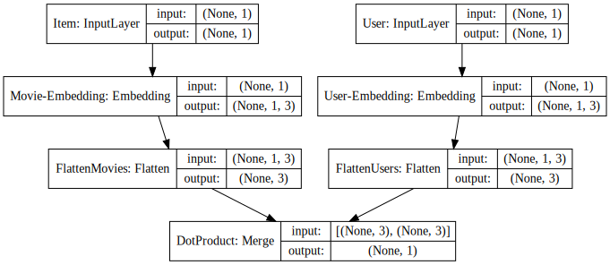
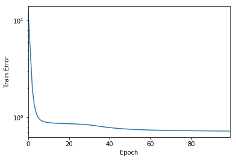
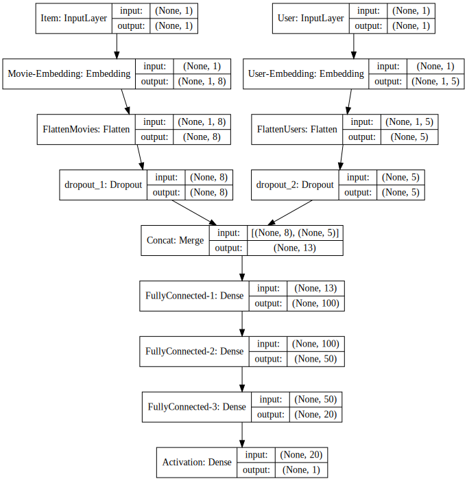

import pandas as pd
import numpy as np
import matplotlib.pyplot as plt
import warnings
warnings.filterwarnings('ignore')
%matplotlib inlineI have written a few posts earlier about matrix factorisation using various Python libraries. The main application I had in mind for matrix factorisation was recommender systems. In this post, I’ll write about using Keras for creating recommender systems. Various people have written excellent similar posts and code that I draw a lot of inspiration from, and give them their credit! I’m assuming that a reader has some experience with Keras, as this post is not intended to be an introduction to Keras.
Specifically, in this post, I’ll talk about:
- Matrix Factorisation in Keras
- Adding non-negativitiy constraints to solve non-negative matrix factorisation (NNMF)
- Using neural networks for recommendations
I’ll be using the Movielens-100k dataset for illustration. There are 943 users and 1682 movies. In total there are a 100k ratings in the dataset. It should be noted that the max. total number of rating for the <users, movies> would be 943*1682, which means that we have about 7% of the total ratings! All rating are on a scale of 1-5.
Task
Given this set of ratings, can we recommend the next set of movies to a user? This would translate to: for every user, estimating the ratings for all the movies that (s)he hasn’t watched and maybe recommend the top-k movies by the esimtated ratings!
Peak into the dataset
dataset = pd.read_csv("/Users/nipun/Downloads/ml-100k/u.data",sep='\t',names="user_id,item_id,rating,timestamp".split(","))dataset.head()| user_id | item_id | rating | timestamp | |
|---|---|---|---|---|
| 0 | 196 | 242 | 3 | 881250949 |
| 1 | 186 | 302 | 3 | 891717742 |
| 2 | 22 | 377 | 1 | 878887116 |
| 3 | 244 | 51 | 2 | 880606923 |
| 4 | 166 | 346 | 1 | 886397596 |
So, each record (row) shows the rating for a user, item (movie) pair. It should be noted that I use item and movie interchangeably in this post.
len(dataset.user_id.unique()), len(dataset.item_id.unique())(943, 1682)We assign a unique number between (0, #users) to each user and do the same for movies.
dataset.user_id = dataset.user_id.astype('category').cat.codes.values
dataset.item_id = dataset.item_id.astype('category').cat.codes.valuesdataset.head()| user_id | item_id | rating | timestamp | |
|---|---|---|---|---|
| 0 | 195 | 241 | 3 | 881250949 |
| 1 | 185 | 301 | 3 | 891717742 |
| 2 | 21 | 376 | 1 | 878887116 |
| 3 | 243 | 50 | 2 | 880606923 |
| 4 | 165 | 345 | 1 | 886397596 |
Train test split
We’ll now split our dataset of 100k ratings into train (containing 80k ratings) and test (containing 20k ratings). Given the train set, we’d like to accurately estimate the ratings in the test set.
from sklearn.model_selection import train_test_split
train, test = train_test_split(dataset, test_size=0.2)train.head()| user_id | item_id | rating | timestamp | |
|---|---|---|---|---|
| 90092 | 832 | 12 | 2 | 875036139 |
| 50879 | 94 | 132 | 3 | 888954341 |
| 67994 | 436 | 12 | 4 | 880141129 |
| 49769 | 710 | 344 | 4 | 884485683 |
| 11032 | 121 | 736 | 4 | 879270874 |
test.head()| user_id | item_id | rating | timestamp | |
|---|---|---|---|---|
| 89284 | 907 | 493 | 3 | 879723046 |
| 60499 | 550 | 25 | 4 | 892785056 |
| 11090 | 373 | 222 | 5 | 880394520 |
| 36096 | 199 | 140 | 4 | 884129346 |
| 21633 | 71 | 317 | 5 | 880037702 |
Matrix factorisation
One popular recommender systems approach is called Matrix Factorisation. It works on the principle that we can learn a low-dimensional representation (embedding) of user and movie. For example, for each movie, we can have how much action it has, how long it is, and so on. For each user, we can encode how much they like action, or how much they like long movies, etc. Thus, we can combine the user and the movie embeddings to estimate the ratings on unseen movies. This approach can also be viewed as: given a matrix (A [M X N]) containing users and movies, we want to estimate low dimensional matrices (W [M X k] and H [M X k]), such that: \(A \approx W.H^T\)
Matrix factorisation in Keras
We’ll now write some code to solve the recommendation problem by matrix factorisation in Keras. We’re trying to learn two low-dimensional embeddings of users and items.
import keras
from IPython.display import SVG
from keras.optimizers import Adam
from keras.utils.vis_utils import model_to_dot
n_users, n_movies = len(dataset.user_id.unique()), len(dataset.item_id.unique())
n_latent_factors = 3Using TensorFlow backend.The key thing is to learn an embedding for movies and users, and then combine them using the dot product! For estimating the rating, for each user, movie pair of interest, we’d take the dot product of the respective user and item embedding. As an example, if we have 2 dimensions in our user and item embedding, which say correspond to [how much user likes action, how much user likes long movies], and the item embedding is [how much action is in the movie, how long is the movie]. Then, we can predict for a user u, and movie m as how much u likes action \(\times\) how much action is there in m \(+\) how much u likes long movies \(\times\) how long is m.
Our model would optimise the emebedding such that we minimise the mean squared error on the ratings from the train set.
movie_input = keras.layers.Input(shape=[1],name='Item')
movie_embedding = keras.layers.Embedding(n_movies + 1, n_latent_factors, name='Movie-Embedding')(movie_input)
movie_vec = keras.layers.Flatten(name='FlattenMovies')(movie_embedding)
user_input = keras.layers.Input(shape=[1],name='User')
user_vec = keras.layers.Flatten(name='FlattenUsers')(keras.layers.Embedding(n_users + 1, n_latent_factors,name='User-Embedding')(user_input))
prod = keras.layers.merge([movie_vec, user_vec], mode='dot',name='DotProduct')
model = keras.Model([user_input, movie_input], prod)
model.compile('adam', 'mean_squared_error')Here’s a visualisation of our model for a better understanding.
SVG(model_to_dot(model, show_shapes=True, show_layer_names=True, rankdir='HB').create(prog='dot', format='svg'))
We can see that in the Merge layer, we take the dot product of the user and the item embeddings to obtain the rating.
We can also summarise our model as follows:
model.summary()__________________________________________________________________________________________________
Layer (type) Output Shape Param # Connected to
==================================================================================================
Item (InputLayer) (None, 1) 0
__________________________________________________________________________________________________
User (InputLayer) (None, 1) 0
__________________________________________________________________________________________________
Movie-Embedding (Embedding) (None, 1, 3) 5049 Item[0][0]
__________________________________________________________________________________________________
User-Embedding (Embedding) (None, 1, 3) 2832 User[0][0]
__________________________________________________________________________________________________
FlattenMovies (Flatten) (None, 3) 0 Movie-Embedding[0][0]
__________________________________________________________________________________________________
FlattenUsers (Flatten) (None, 3) 0 User-Embedding[0][0]
__________________________________________________________________________________________________
DotProduct (Merge) (None, 1) 0 FlattenMovies[0][0]
FlattenUsers[0][0]
==================================================================================================
Total params: 7,881
Trainable params: 7,881
Non-trainable params: 0
__________________________________________________________________________________________________So, we have 7881 parameters to learn! Let’s train our model now!
history = model.fit([train.user_id, train.item_id], train.rating, epochs=100, verbose=0)Train error v/s epoch number
Before we test how well our model does in the test setting, we can visualise the train loss with epoch number.
pd.Series(history.history['loss']).plot(logy=True)
plt.xlabel("Epoch")
plt.ylabel("Train Error")<matplotlib.text.Text at 0x1155a07b8>
Prediction error
Let’s now see how our model does! I’ll do a small post-processing step to round off our prediction to the nearest integer. This is usually not done, and thus just a whimsical step, since the training ratings are all integers! There are better ways to encode this intger requirement (one-hot encoding!), but we won’t discuss them in this post.
y_hat = np.round(model.predict([test.user_id, test.item_id]),0)
y_true = test.ratingfrom sklearn.metrics import mean_absolute_error
mean_absolute_error(y_true, y_hat)0.6915Not bad! We’re able to get a \(MAE\) of 0.69! I’m sure with a bit of parameter/hyper-parameter optimisation, we may be able to improve the results. However, I won’t talk about these optimisations in this post.
Extracting the learnt embeddings
We can extract the learnt movie and item embeddings as follows:
movie_embedding_learnt = model.get_layer(name='Movie-Embedding').get_weights()[0]
pd.DataFrame(movie_embedding_learnt).describe()| 0 | 1 | 2 | |
|---|---|---|---|
| count | 1683.000000 | 1683.000000 | 1683.000000 |
| mean | -0.935420 | 0.857862 | 0.954169 |
| std | 0.517458 | 0.447439 | 0.458095 |
| min | -2.524487 | -0.459752 | -0.989537 |
| 25% | -1.323431 | 0.546364 | 0.642444 |
| 50% | -0.949188 | 0.851243 | 0.993619 |
| 75% | -0.550862 | 1.159588 | 1.283555 |
| max | 0.500618 | 2.140607 | 2.683658 |
user_embedding_learnt = model.get_layer(name='User-Embedding').get_weights()[0]
pd.DataFrame(user_embedding_learnt).describe()| 0 | 1 | 2 | |
|---|---|---|---|
| count | 944.000000 | 944.000000 | 944.000000 |
| mean | -1.126231 | 1.171609 | 1.109131 |
| std | 0.517478 | 0.409016 | 0.548384 |
| min | -2.883226 | -0.500010 | -0.415373 |
| 25% | -1.458197 | 0.903574 | 0.735729 |
| 50% | -1.159480 | 1.199517 | 1.084089 |
| 75% | -0.836746 | 1.456610 | 1.468611 |
| max | 0.899436 | 2.605330 | 2.826109 |
We can see that both the user and the item embeddings have negative elements. There are some applications which require that the learnt embeddings be non-negative. This approach is also called non-negative matrix factorisation, which we’ll workout now.
Non-negative Matrix factorisation (NNMF) in Keras
The code for NNMF remains exactly the same as the code for matrix factorisation. The only change is that we add non-negativity constraints on the learnt embeddings. This is done as follows:
from keras.constraints import non_neg
movie_input = keras.layers.Input(shape=[1],name='Item')
movie_embedding = keras.layers.Embedding(n_movies + 1, n_latent_factors, name='NonNegMovie-Embedding', embeddings_constraint=non_neg())(movie_input)
movie_vec = keras.layers.Flatten(name='FlattenMovies')(movie_embedding)
user_input = keras.layers.Input(shape=[1],name='User')
user_vec = keras.layers.Flatten(name='FlattenUsers')(keras.layers.Embedding(n_users + 1, n_latent_factors,name='NonNegUser-Embedding',embeddings_constraint=non_neg())(user_input))
prod = keras.layers.merge([movie_vec, user_vec], mode='dot',name='DotProduct')
model = keras.Model([user_input, movie_input], prod)
model.compile('adam', 'mean_squared_error')We now verify if we are indeed able to learn non-negative embeddings. I’ll not compare the performance of NNMF on the test set, in the interest of space.
history_nonneg = model.fit([train.user_id, train.item_id], train.rating, epochs=10, verbose=0)movie_embedding_learnt = model.get_layer(name='NonNegMovie-Embedding').get_weights()[0]
pd.DataFrame(movie_embedding_learnt).describe()| 0 | 1 | 2 | |
|---|---|---|---|
| count | 1683.000000 | 1683.000000 | 1683.000000 |
| mean | 0.838450 | 0.840330 | 0.838066 |
| std | 0.301618 | 0.301529 | 0.301040 |
| min | -0.000000 | -0.000000 | -0.000000 |
| 25% | 0.657749 | 0.663951 | 0.656453 |
| 50% | 0.901495 | 0.904192 | 0.895934 |
| 75% | 1.072706 | 1.073591 | 1.072926 |
| max | 1.365719 | 1.379006 | 1.373672 |
Looks good!
Neural networks for recommendation
We’ll now create a simple neural network for recommendation, or for estimating rating! This model is very similar to the earlier matrix factorisation models, but differs in the following ways:
- Instead of taking a dot product of the user and the item embedding, we concatenate them and use them as features for our neural network. Thus, we are not constrained to the dot product way of combining the embeddings, and can learn complex non-linear relationships.
- Due to #1, we can now have a different dimension of user and item embeddings. This can be useful if one dimension is larger than the other.
n_latent_factors_user = 5
n_latent_factors_movie = 8
movie_input = keras.layers.Input(shape=[1],name='Item')
movie_embedding = keras.layers.Embedding(n_movies + 1, n_latent_factors_movie, name='Movie-Embedding')(movie_input)
movie_vec = keras.layers.Flatten(name='FlattenMovies')(movie_embedding)
movie_vec = keras.layers.Dropout(0.2)(movie_vec)
user_input = keras.layers.Input(shape=[1],name='User')
user_vec = keras.layers.Flatten(name='FlattenUsers')(keras.layers.Embedding(n_users + 1, n_latent_factors_user,name='User-Embedding')(user_input))
user_vec = keras.layers.Dropout(0.2)(user_vec)
concat = keras.layers.merge([movie_vec, user_vec], mode='concat',name='Concat')
concat_dropout = keras.layers.Dropout(0.2)(concat)
dense = keras.layers.Dense(200,name='FullyConnected')(concat)
dropout_1 = keras.layers.Dropout(0.2,name='Dropout')(dense)
dense_2 = keras.layers.Dense(100,name='FullyConnected-1')(concat)
dropout_2 = keras.layers.Dropout(0.2,name='Dropout')(dense_2)
dense_3 = keras.layers.Dense(50,name='FullyConnected-2')(dense_2)
dropout_3 = keras.layers.Dropout(0.2,name='Dropout')(dense_3)
dense_4 = keras.layers.Dense(20,name='FullyConnected-3', activation='relu')(dense_3)
result = keras.layers.Dense(1, activation='relu',name='Activation')(dense_4)
adam = Adam(lr=0.005)
model = keras.Model([user_input, movie_input], result)
model.compile(optimizer=adam,loss= 'mean_absolute_error')Let’s now see how our model looks like:
SVG(model_to_dot(model, show_shapes=True, show_layer_names=True, rankdir='HB').create(prog='dot', format='svg'))
It should be noted that we use a different number of embeddings for user (3) and items (5)! These combine to form a vector of length (5+3 = 8), which is then fed into the neural network. We also add a dropout layer to prevent overfitting!
model.summary()__________________________________________________________________________________________________
Layer (type) Output Shape Param # Connected to
==================================================================================================
Item (InputLayer) (None, 1) 0
__________________________________________________________________________________________________
User (InputLayer) (None, 1) 0
__________________________________________________________________________________________________
Movie-Embedding (Embedding) (None, 1, 8) 13464 Item[0][0]
__________________________________________________________________________________________________
User-Embedding (Embedding) (None, 1, 5) 4720 User[0][0]
__________________________________________________________________________________________________
FlattenMovies (Flatten) (None, 8) 0 Movie-Embedding[0][0]
__________________________________________________________________________________________________
FlattenUsers (Flatten) (None, 5) 0 User-Embedding[0][0]
__________________________________________________________________________________________________
dropout_1 (Dropout) (None, 8) 0 FlattenMovies[0][0]
__________________________________________________________________________________________________
dropout_2 (Dropout) (None, 5) 0 FlattenUsers[0][0]
__________________________________________________________________________________________________
Concat (Merge) (None, 13) 0 dropout_1[0][0]
dropout_2[0][0]
__________________________________________________________________________________________________
FullyConnected-1 (Dense) (None, 100) 1400 Concat[0][0]
__________________________________________________________________________________________________
FullyConnected-2 (Dense) (None, 50) 5050 FullyConnected-1[0][0]
__________________________________________________________________________________________________
FullyConnected-3 (Dense) (None, 20) 1020 FullyConnected-2[0][0]
__________________________________________________________________________________________________
Activation (Dense) (None, 1) 21 FullyConnected-3[0][0]
==================================================================================================
Total params: 25,675
Trainable params: 25,675
Non-trainable params: 0
__________________________________________________________________________________________________We can see that the number of parameters is more than what we had in the Matrix Factorisation case. Let’s see how this model works. I’ll run it for more epochs given that we have more parameters.
history = model.fit([train.user_id, train.item_id], train.rating, epochs=250, verbose=0)Prediction performance of Neural Network based recommender system
y_hat_2 = np.round(model.predict([test.user_id, test.item_id]),0)
print(mean_absolute_error(y_true, y_hat_2))
print(mean_absolute_error(y_true, model.predict([test.user_id, test.item_id])))
0.6957
0.708807692927Pretty similar to the result we got using matrix factorisation. Maybe, we need to tweak around a lot more with the neural network to get better results?
Thanks for reading. This post has been a good learning experience for me. Hope you enjoyed too!